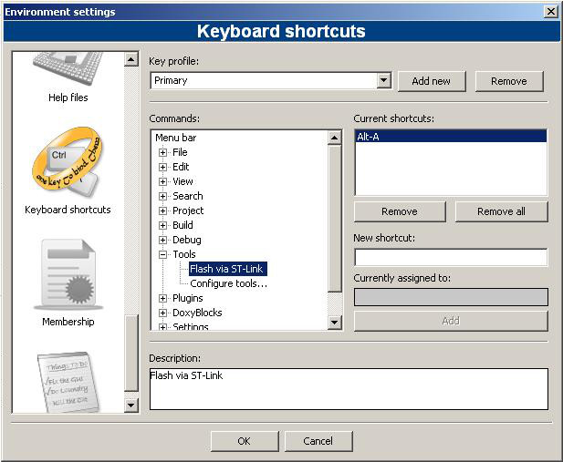
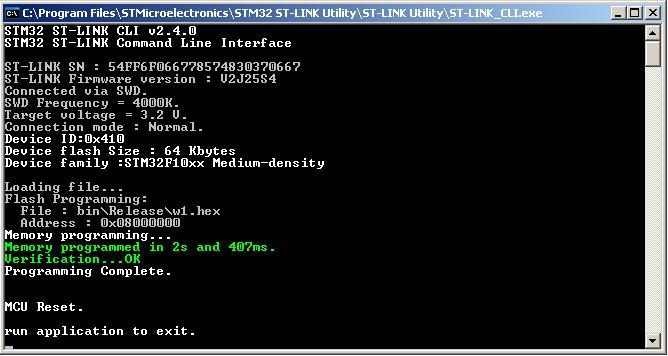

Среда разработки
|
|
|
|
|
Среда разработки |
Микроконтроллеры
AVR, используемые в Arduino привлекают своей простотой. Но в
определенный момент возникает ситуация, когда мощности этих
микроконтроллеров не хватает. Тогда обращают внимание на
микроконтроллеры ARM. Наибольшее распространение имеет отладочная
плата "голубая таблетка", МК STM32F103C8T6:
На Aliexpress такую можно купить за пару долларов.
Но "быстрый старт" на этом микроконтроллере как правило не получается в силу обилия периферии и как следствие сложности в понимании этого микроконтроллера. Прежде, чем что-то начнет на нем работать приходится прочесть datasheet-ы по ARM и понять, что же в них написано.
А хочется, чтобы что-то сразу начало работать...
Безусловно, есть адаптации среды разработки Arduino для "голубой таблетки". Но эти решения пока что еще достаточно "сырое" и не позволяют полноценно использовать возможности микроконтроллера STM32F103C8T6.
Попробуем исправить это положение дел.
С этой целью была разработана "универсальная прошивка" для "голубой таблетки". Цель проекта предельно снизить порог вхождения в микроконтроллер STM32F103C8T6. По возможности сделав его ниже, чем у Arduino. Достаточно минимальных знаний о микроконтроллере и минимальных навыков в программировании.
Были опробованы различные свободные IDE, в том числе основанные на Eclipse.
Наиболее простым и удобным показался EmBitz. Это клон Em::Blocks. Имеет небольшой размер и после установки сразу готов к использованию.
Скачать дистрибутив можно отсюда: www.embitz.org Проекты будут подготавливаться именно для этой среды разработки. Из общих минусов среды можно отметить лишь один - нет версии под Linux.
Дополнительно
нужно установить утилиты
STM32 ST-LINK Utility (
https://www.st.com/en/development-tools/stsw-link004.html
) (STSW-LINK004)
и
Flash Loader Demo (
https://www.st.com/en/development-tools/flasher-stm32.html
) (UM0462)
Зеркала:
STM32
ST-LINK Utility,
Flash
Loader Demo
Данные утилиты будут использоваться для загрузки "прошивок".
После установки EmBitz потребуются небольшие настройки, в частности добавить в меню User-defined tool.
Tools
-" Configure tools... -" Add
Flash via ST-Link
Name: Flash via ST-LinkExecutable: C:\Program Files\STMicroelectronics\STM32
ST-LINK Utility\ST-LINK Utility\ST-LINK_CLI.exeParameters: -c SWD -P "${TARGET_OUTPUT_DIR}$
{TARGET_OUTPUT_BASENAME}.hex" 0x08000000 -V
-Rst -RunWorking directory: ${PROJECT_DIR}
Для удобства работы с инструментом загрузки можно назначить на этот инструмент "горячую кнопку", например "Alt-A".
Flash via loader demonstrator
Name: Flash loader demonstrator
Executable:C:\Program
Files\STMicroelectronics\Software\Flash Loader
Demonstrator\STMFlashLoader.exeParameters:-c --pn 14 --br 115200 --to 3000 -i STM32
Med-density-value_64K -e --all -d --o --fn "$
{TARGET_OUTPUT_DIR}$
{TARGET_OUTPUT_BASENAME}.hex" -p --drpWorking directory: ${PROJECT_DIR}
Параметр - "pn" это номер COM-порта. Необходимо ввести тот, который связан с USB-UART адаптером. В примере это COM14.
При использовании UART1 для "прошивки" и одновременной работы с терминалом TerraTerm, сначала нужно освободить терминал. В TerraTerm Нажать Ctrl-I, после окончания загрузки, для подключения терминала — Ctrl-N.
Hot key:
Setting
- Environment

При
успешной загрузке прошивки в микроконтроллер увидим примерно такую
картинку:

Для закрытия этого окна нажать "Enter".
|
Shift-F2 |
показать/скрыть дерево проекта |
|
F2 |
показать/скрыть окно сообщений |
|
F7 |
компиляция проекта |
{kind=link}